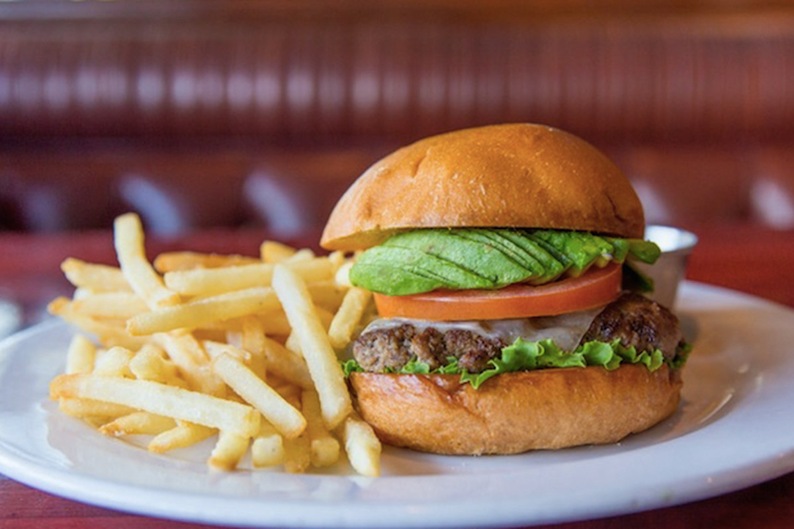

Hamburger

The all american heart attack burger. Utilising Australian's finest
cut of waygyu beef this succulent pattie delivers a flavour bomb.
Ingredients
- Bun
- 100% all aussie beef pattie
- lettuce
- Ketchup
- Bacon
- Salsa
Steps
- Set a slow cooker to Low.
- Create a rack for the bottom of the cooker by rolling
aluminum foil into 1-inch rolls.
For a 5-quart, oblong cooker, make 4 rolls, using the length of the cooker as a guide.
Fold in any long ends and squeeze back on the rolls.
venly space the rolls along the bottom of the cooker.
- Combine ground beef, liquid smoke, Worcestershire sauce, steak seasoning, smoked paprika, salt,
and pepper in a bowl. Add bread crumbs and egg.
Mix all ingredients using your hands until they are evenly distributed.
- Form meat mixture into 4 patties, about 1/2 inch thick. Brush each side of the patties
with 1/2 teaspoon of browning sauce,
and place on the aluminum "rack", being careful not to overlap.
- Cook on Low for about 4 1/2 hours until burgers are no longer pink in the center.
An instant-read thermometer inserted into the center
should read at least 160 degrees F (70 degrees C).
- Place each cooked patty on a hamburger bun.